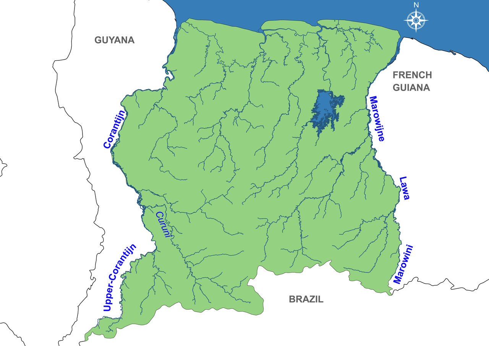
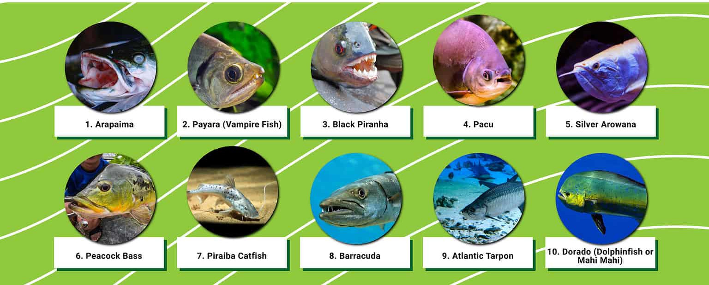

Northern Courantyne River
The northern part of the Courantyne makes up the west border of Suriname on the eastside and Guyana on the west side. The northern river leads into the ocean and is considered the end half of the river leading into the Atlantic. Boat traffic and fishing are prominent in this region but are heavily licensed as territorial disputes leading into 2007 with Guyana as to authority of the river lead to a highly bureaucratized and monitored river. This northern half is considered safe and the Nieuw Nickeri is the third most populated city in the country, at the end of the northern part of the river lies Apoera, a very small town of less wealthy means.
 This is a look at the Courantyne river from a mapThe fish in the river consist mostly of various types of catfish; Dark Caped Goliath, Bearded, Hypostomus catfish. There are turtles like the Leatherback Turtle, Crocola Turtle; there are lots of birds such as the Scarlet Ibis, Striated Heron, Great Kiskadee, Toucans, and the Tropical Mockingbird. There are White Faced and Golden Faced Saki there which are a type of pygmy monkey. And there are various poisonous tropical animals and fauna to look out for. The Blue Poison Dart Frog, Green Tree Boa, Southern American Bushmaster, the Rainbow Boa, and the Chicken snake. Jaguars have been known to roam the Forests of the rivers but are mostly night hunters and non-confrontational most of the time towards humans.
Southern Courantyne River
The same animals can be found here but the dangerous fauna and wildlife become more common in these southern regions. There are also various waterfalls that are found here considering this region is the start or head of the river coming down from the Acarai Mountains. It is also more narrow at times at these points than the more consistent northern river. Overall this region is considerably more dangerous and relatively undocumented and thus would make for a poor leisurely destination for tourism. This region of the river is best for fit and extremely professional navigators and explorers.  10 Popular fish found along this river
Yellow Oleander, the Castor Bean, and the Manchineel can grow here all of which are intensely poisonous so best to avoid eating any unfamiliar plant fauna at all times.